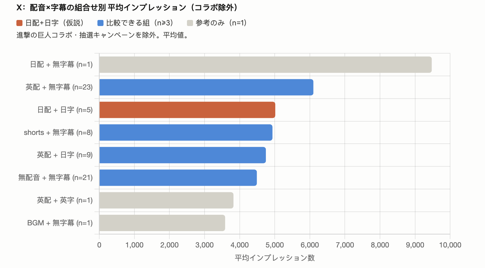
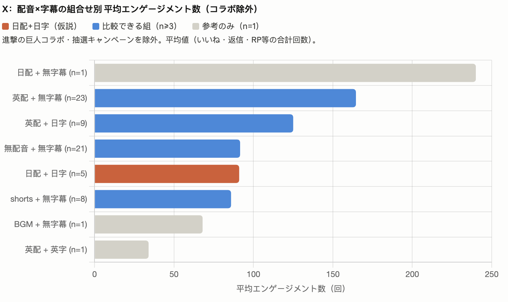

粉丝数变动
37.7K
认证 372 / 活跃 21.6K
曝光量
96.3K
▼ 37% vs 146.8K
平均单条曝光
4,013
▼ 34% vs 6,118
归因
本周曝光表现较好的内容主要集中在区域趣味内容与版本信息：本周曝光量为 96.3K，较上周回落 37%。表现较好的内容主要集中在区域自制 / 趣味内容、新版本解读 / 玩法介绍、开发沟通和参与型趣味话题。
信号
玩家直接收益和信息差最能拉动互动：奖励机制、最低落札额公开、宝物出现位置等内容互动率较高；官方信息差内容也具备点击和互动潜力，区域自制趣味内容仍是拉动社区活跃的重要抓手。
TOP5 帖子（按曝光量）
-
1
誰にウルトを使う？
区域自制 / 趣味内容 · 互动率 5.4%
6,871
-
2
瑶高光视频
新皮肤 / 高光 · 互动率 1.7%
4,737
-
3
6月19日アップデートのお知らせ
新版本情报 · 互动率 2.5%
4,667
-
4
#オナオブ開発トーク
开发者沟通 · 互动率 12.0%
4,479
-
5
超流大乱闘アップデート紹介
玩法介绍 · 互动率 1.3%
4,015
高互动内容
本周互动率最高的内容集中在官方信息差、奖励机制和参与型趣味话题，包括「#オナオブ開発トーク」12.0%、「スーパー・ハーベスト開催告知」10.2% 和「宝物が出現しやすい場所」8.0%。
多语言素材
日语字幕 + 英配或日配对互动和曝光的影响不明显，内容本身是否有足够信息量、玩家是否关心才是关键。纯英文 + 英文字幕素材表现最弱，赛事类可优先采用引用 + 日语解释的发布策略。
发布风险
近期挖宝、竞拍等合规风险较高内容较多，OPEN 赛事素材延期严重，原定发布坑位难以按时拿到素材，且已上表内容经常反复修改；宝箱 CDK 发布问题和 HQ 发帖管理混乱也增加了额外人力调整成本。
多语言字幕 / 配音数据对比


数据来源：X Analytics（6/17-6/23 vs 6/9-6/15）· 文档提炼版